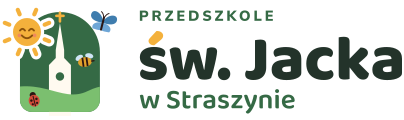
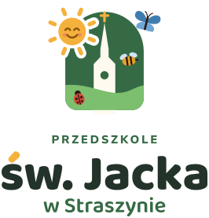
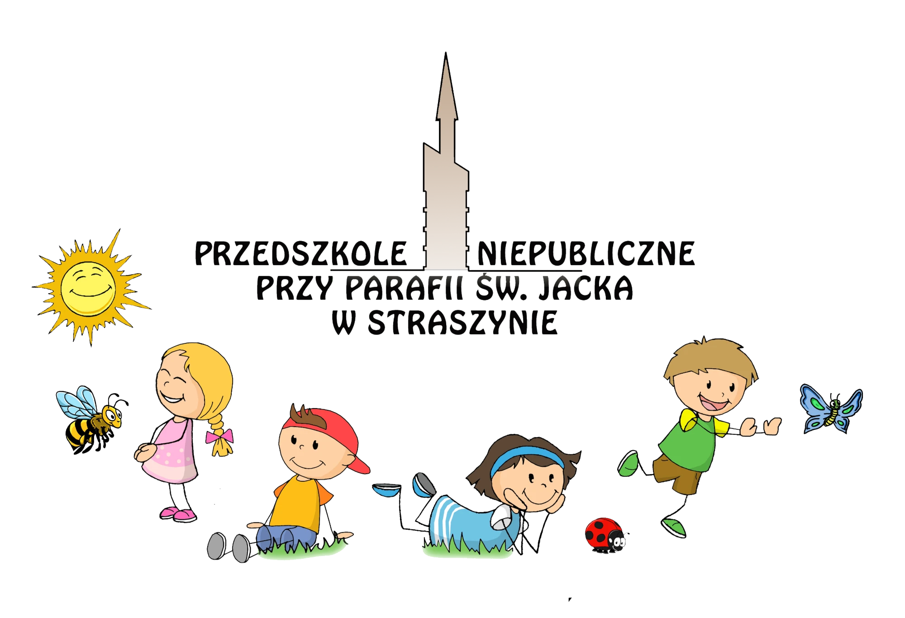
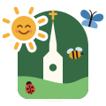
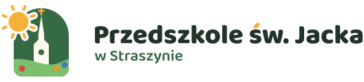
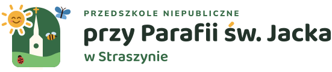
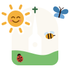
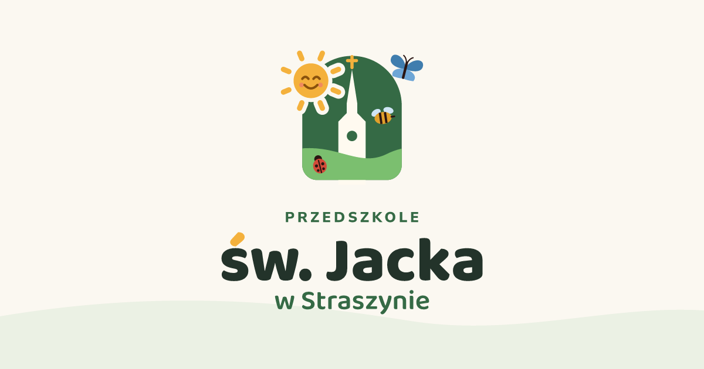

Logo pełne
Sygnet z owadami i trzywierszowy napis. Wersja pozioma lub pionowa.
Stopka strony, plakaty, papier firmowy, dyplomy. Od 90 px / 30 mm wysokości.
Księga znaku · 2026
Radosny, nowoczesny znak, który wyrasta z dawnego logo: smukła wieża kościoła, uśmiechnięte słońce i trzy przedszkolne grupy. Zestaw dopasowuje się do miejsca — od nagłówka strony i pieczątki, po papier firmowy i ikonę w przeglądarce.

Koncepcja
Zachowaliśmy to, co rodzice i dzieci znają: wieżę parafii, słońce i owady. Zamiast ilustracji z wieloma postaciami powstał prosty znak, czytelny zarówno na dużym banerze, jak i w ikonce 16 px.


Responsywność
Im mniej miejsca, tym mniej szczegółów. Każdy poziom upraszcza poprzedni, ale zachowuje sylwetkę wieży, słońce i kolory — dzięki temu logo zawsze jest rozpoznawalne.

Sygnet z owadami i trzywierszowy napis. Wersja pozioma lub pionowa.
Stopka strony, plakaty, papier firmowy, dyplomy. Od 90 px / 30 mm wysokości.

Uproszczony sygnet i dwa wiersze — większe litery przy tej samej wysokości.
Nagłówek strony, e-maile, pieczątki. Od 36 px / 10 mm wysokości.
Sam znak, gdy nazwa jest obok albo brakuje miejsca na napis.
Telefon (wąski ekran), awatar, naklejki, odznaki. Od 24 px / 8 mm.
Znak wpisany w zaokrąglony kwadrat — czytelny nawet w 16 px.
Favicon, ikona na ekranie telefonu, profil w mediach społecznościowych.
Przesuń suwak: na najwęższych ekranach w nagłówku zostaje sam sygnet, od 340 px (czyli na typowym telefonie) jest logo kompaktowe, a w stopce zawsze jest miejsce na pełny napis.
Warianty
Wersja kolorowa jest podstawowa. Na zielonym lub ciemnym tle użyj negatywu, a do druku jednym kolorem, grawerunku czy pieczątki — wersji jednobarwnych. Wszystkie pliki mają przezroczyste tło.
Kolory
Kolory są te same, co na stronie przedszkola. Zieleń prowadzi, a czerwień, błękit i miód należą do Biedronek, Motylków i Pszczółek — można nimi oznaczać materiały poszczególnych grup.
#356A45#7BBF6F#F4B13C#23332A#FBF8F1#D24A39#3F7DAE#E0A02BTypografia
W plikach logo napisy są zamienione na krzywe, więc nie trzeba instalować fontów. Do dokumentów i na stronę używaj tych samych krojów — oba są bezpłatne (Google Fonts).
Nagłówki i nazwa
św. Jacka
Aa Ąą Ćć Ęę Łł Ńń Óó Śś Źź Żż 0123456789
Tekst i małe napisy
Przedszkole
Wersaliki z szerokim odstępem (0,2 em) dla krótkich etykiet; zwykły tekst — Regular 11–12 pt w dokumentach.
Zasady
Wokół logo zostaw wolną przestrzeń równą ¼ wysokości sygnetu (mniej więcej szerokość wieży). Nic nie powinno w nią wchodzić — tekst, krawędź kartki ani zdjęcie.
| Wersja | Ekran | Druk |
|---|---|---|
| Pełne | 90 px wys. | 30 mm wys. |
| Kompaktowe | 36 px wys. | 10 mm wys. |
| 24 px | 8 mm | |
| Ikona | 16 px | — |
Nie rozciągaj ani nie ściskaj logo.
Nie zmieniaj kolorów spoza palety.
Na zieleni używaj negatywu, nie wersji kolorowej.
Bez cieni, obrysów i obracania.
Zastosowania

ul. Poprzeczna 24
 Przedszkole św. Jacka w Straszynie
Nowa karta
Przedszkole św. Jacka w Straszynie
Nowa karta

Grafika Open Graph — pokazuje się przy udostępnianiu strony na Facebooku czy w komunikatorach.
Wdrożenie i pliki
Na stronie używaj plików SVG — są ostre na każdym ekranie i lekkie. Do Worda, Canvy czy drukarni sprawdzą się też PNG z przezroczystym tłem.
<!-- nagłówek strony: sygnet na najwęższych ekranach, logo kompaktowe od 340 px -->
<a class="brand" href="/">
<picture>
<source media="(min-width: 340px)" srcset="brand/logo/svg/logo-kompaktowe.svg">
<img src="brand/logo/svg/sygnet-mini.svg" alt="Przedszkole św. Jacka w Straszynie" height="48">
</picture>
</a>
<!-- w <head> -->
<link rel="icon" href="brand/favicon/favicon.svg" type="image/svg+xml">
<link rel="icon" href="brand/favicon/favicon-32.png" sizes="32x32">
<link rel="apple-touch-icon" href="brand/favicon/apple-touch-icon.png">
<meta property="og:image" content="https://ADRES-STRONY/brand/favicon/og-image.png">brand/logo/svg i brand/logo/png